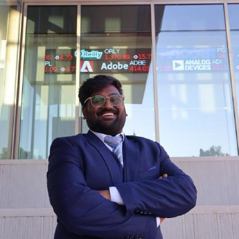

AI Engineer · Agentic AI Engineer — Multi-Agent Systems, RAG & LLM Evals
A 4–5 day manual KYC process now finishes in under 24 hours, with zero false approvals. I architected the multi-agent system behind it — stateful, auditable, cost-aware, and measured. Move your cursor: the network behind this page reacts, like the agents I build.
This is the architecture of the multi-agent KYC platform I run at Enteraxion — an orchestrator delegating to specialist agents over MCP, with an evaluator gating every decision. The feed on the right simulates live case traffic.
Result in production: 80% of B2B cases fully automated · 4–5 days → under 24 hours · zero false approvals.
Illustrative simulation of the production pipeline's event stream.
Before any model or prompt ships, it runs against a 500+ question benchmark. Here's a replay of the run that caught a launch-blocking hallucination problem — and verified the fix.
The retrieval system behind a 45% hallucination reduction at MyUI.AI. Five stages, each one measured.
Stateful LangGraph agents with MCP tool calling verify B2B customers across 10+ services — 80% of cases fully automated, errors down from 15% to 2%, zero false approvals.
Retrieval pipeline over 5,000+ documents with a 500+ Q&A eval harness gating every release — 45% fewer hallucinations, sub-2s latency, answer relevance up 35%.
Routes requests across Claude, OpenAI and Gemini by cost, latency and eval scores — cutting inference spend 30% without quality regression.
Java/Spring Boot microservices with Kafka event streaming processing millions of payment transactions daily with exactly-once delivery guarantees.
Amazon Web Services · Issued Jul 2026 · Verify on Credly ↗
Aug 2023 – May 2025 · GPA 3.90
I'm open to AI Engineer and Agentic AI Engineer roles across the US — remote, hybrid or on-site, and available to interview at any time.